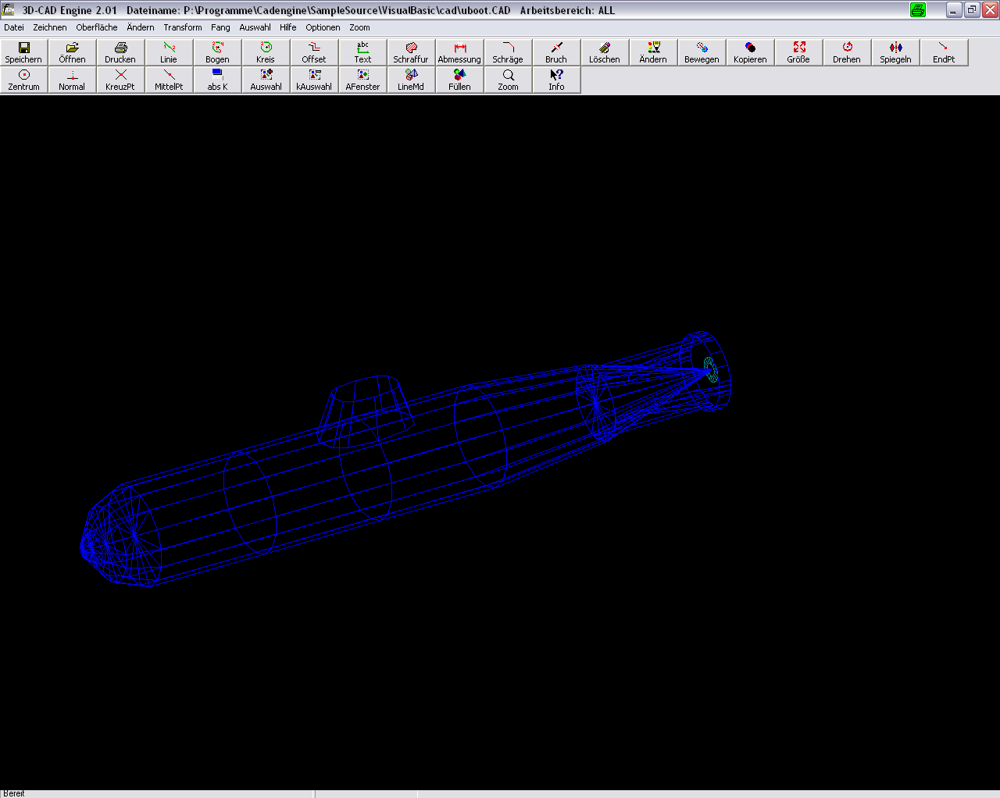

Dokumentenverwaltung | Strukturieren Sie Ihre Ablage | deskOne
 Jetzt registrieren Deutsch English Digitaler Arbeitsplatz Preisplan Funktionen Adressverwaltung Aufgaben und Pendenzen Dokumentenverwaltung Posteingang und Scanning Prozesssteuerung Dokumentation Über uns
Dokumentenverwaltung
Der moderne digitale Arbeitsplatz deskOne, welcher ein elektronisches Arbeiten im papierlosen Büro ermöglicht, unterstützt die homogene Einbindung aller dokumententragenden Systeme wie z.B. Word, Excel, PowerPoint und Imaging-Lösungen.
KOSTENLOS TESTENDokumente sicher aufbewahren
Strukturiertes Ablegen
Die Dokumente, werden zentral verwaltet und werden Ihnen unabhängig von Ort und Zeit zur Verfügung gestellt. Durch strukturiertes Ablegen finden Sie zu jedem Zeitpunkt genau das richtige Dokument.
Collaboration
Arbeiten Sie gemeinsam an Ihren Dokumenten. Nutzen Sie die Collaboration, den gemeinsamen Arbeitsplatz und profitieren Sie von den zentral verwalteten Informationen.
Datensicherheit
Sichere Datenhaltung kostet viel Geld, da genügt es nicht, die IT in der Freizeit zu betreuen. Unsere qualifizierten Mitarbeiter lassen keinen Spielraum für Datenmissbrauch. Wir sind in der Lage, Ihre Vorstellungen zu spannenden Preisen anzubieten.
Zugriffsschutz
Vergewissern Sie sich, dass Ihre Daten bestmöglichst per Zugriffsschutz mit einer einfachen oder mehrfachen Authentifzierung geschützt sind. Lassen Sie es nicht zu, dass Ihre Daten in falsche Hände gelangen.
Dokumente strukturiert ablegen
In der Dokumentenverwaltung werden sämtliche, zu einem Geschäftsfall oder zu einer Adresse gehörende Dokumente geführt. Ein voll elektronisches Arbeiten (papierloser Arbeitsplatz) ist durch die homogene Einbindung wie zum Beispiel Word, Excel. Imaging-Lösungen, Grafik- und Voice-Anwendungen möglich. Physische Dokumente und Dossiers können mit der Referenz zum Geschäftsfall sowie dem jeweiligen physischen Aufenthaltsort erfasst und geführt werden.
Dokument bearbeiten
Dokumente werden im deskOne erstellt und mit den bereits bekannten Programmen direkt zur Bearbeitung geöffnet.
Anywhere, anytime, anydevice
Wird das Dokument einmal erstellt, steht es Ihnen jederzeit und von praktisch jedem Device zur Verfügung.
Intelligente Suche
Passen Sie die Suche und die Trefferlisten auf Ihre Bedürfnisse an. Nutzen Sie die intelligente und flexible Suche und finden Sie Ihre Dokumente schnell und einfach wieder. Mit der zusätzlichen Volltextsuche auf Dateiinhalte gehören die zeitaufwändigen oder gar erfolglosen Suchen der Vergangenheit an.
Dokumente mit Vorlagen erstellen
Dokumente können mit einer hinterlegten Vorlage vollautomatisch erstellt werden. Die Dokumentendaten aus dem digitalen Arbeitsplatz können direkt mit vorgesehenen Platzhaltern in das Dokument integriert werden.
Langzeitarchivierung
Moderner digitaler Arbeitsplatz
Sind Dokumente vorhanden, welche für längere Zeit aufbewahrt werden müssen, können diese mit der elektronischen Archivierungsfunktion vermerkt und archiviert werden. Für die digitale Archivierung, basierend auf dem ISO Referenzmodell OAIS Open Archival Information System (ISO 14721:2012), verfügt deskOne über eine normierte Schnittstelle zur Erzeugung der geforderten SIP-Objekte (Submission Information Package). Unsere Archivierungslösung erfüllt die Anforderungen des schweizerischen Bundesarchivs (BAR).
Mehr über deskOne erfahren
Preisplan Funktionen DokumentationBeiträge die Sie interessieren könnten.
Was umfasst die Logistik im Unternehmen
MEHR DAZU
Übergang in eine strukturierte Ablage
MEHR DAZU
Mobilität eine Selbstverständlichkeit
MEHR DAZU
deskOne
Registrieren PreisplanFunktionen
Adressverwaltung Aufgaben und Pendenzen Dokumentenverwaltung Posteingang und Scanning ProzesssteuerungReferenzen
DokumentationOrganisation
Beiträge Über unsdesk One
© 2019 ABF Informatik AG